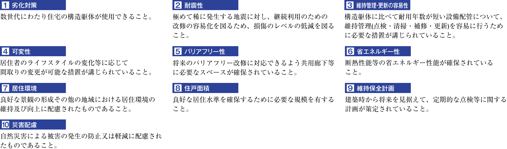

基本構造
第三者機関による客観的かつ公正な評価住宅性能評価書
-
「住宅の品質確保の促進等に関する法律（品確法）」に基づいた、「住宅性能表示制度」による性能評価を受けています。
本制度は従来わかりづらかった住まいの性能について、国土交通大臣登録の住宅性能評価機関が同じ基準で、等級（数値）をつけるというものです。● 住宅性能評価書の種類
評価書には、設計図書の段階で評価した結果をまとめた「設計住宅性能評価書」と、施工段階と完成段階の現場での検査を経て評価した結果を記載した「建設住宅性能評価書」の2種類があります。
-

-
● 住宅性能表示は項目毎に等級や数値等で表示
品確法による住宅性能表示制度では項目ごとに等級、数値および設計内容等が表示されます。等級が高いほど、性能が高いということです。ただし、これらの性能のなかには「耐震」の項目で高い等級がついても、梁や柱、壁を強くしているために、窓などが小さくなり、開口率などを表わす「光・視環境」の項目では高い数値にならない、という関係もあるため、あくまでも、住まい選びの「目安」として、ご活用ください。
-
住宅性能評価項目
-
-
※「音環境に関すること（選択項目）」、「空気環境に関すること」のなかの「室内空気中の化学物質の濃度等（選択項目）」については、評価を取得しておりません。あらかじめご了承ください。
※詳細は係員にお尋ねください。
-
人にも環境にも優しいZEH-M Oriented
（ゼッチ・マンション オリエンテッド）本物件は、外皮の断熱性能などの向上と共に、高効率な設備システムを導入することで、室内環境の質を保ちつつ省エネルギーを実現。共用部を含む住棟全体で年間の一次エネルギー消費量を現行の省エネ基準値から20％以上削減することを目指した基準「ZEH-MOriented」を取得予定です。
 -
強固な地盤と基礎杭16本の杭を打設（※エントランス棟を除く。）
強度の高い建物づくりには、強固な支持層まで達する杭で建物をしっかりと支えることが重要です。
-
●地盤
地下約38ｍ～約41m以深、最大Ｎ値50以上の強固な地盤を支持層としています。●基礎杭
場所打ちコンクリート杭
［杭径（軸径）約1300㎜～約1700㎜を16本打ち込んでいます。］※Ｎ値とは：
地盤の硬さ等を示す数値。重量63.5㎏のハンマーを76㎝自由落下させ、サンプラーと呼ばれる鋼管パイプを地中に30㎝打ち込むのに、上から何回叩いたか、その回数を示すものです。Ｎ値50とは、30㎝打ち込むために50回叩かねばならない強固な地盤であることを示します。
-
-
（概念図）
劣化を軽減する水・セメント比
住戸のある建物はコンクリートの耐久性を高めるため、柱・梁・床などの主要な構造部について、セメントの重量に対する水の重量の割合を50％以下に設定しています。※杭を除く。
構造強度を高めるダブル配筋
住戸のある建物の耐震壁の鉄筋は、コンクリートの中に二重に鉄筋を配したダブル配筋を採用し、シングル配筋に比べより高い耐震性を確保します。
（概念図）
柱を粘り強くし耐震性を高める溶接閉鎖型帯筋
住戸のある建物の主要な柱部分には帯筋の接続部を溶接した、溶接閉鎖型帯筋を採用しました。工場溶接による安定した強度の確保によって、地震時の主筋のはらみ出しを抑制して、コンクリートの拘束力を高めます。※柱と梁の接合部を除く。

（概念図）
（概念図）
プライバシー
-
外部からの騒音を軽減するサッシュ
一部住戸には、防音性に配慮し、遮音性能Ｔ-1相当のサッシュを採用。外部から侵入する音の低減に配慮しています。※詳細は係員にお尋ねください。
［サッシュの遮音性能等級とは］ T-4～T-1で表わされ、等級値（T-値）が大きいほど、遮音性に優れています。なお、サッシュ性能値はJI Sで定められた測定環境で測定した値であり、実際に取り付けられた住戸では、その性能値と異なる場合があります。
軽量床衝撃音の軽減に効果のある⊿LL(Ⅰ) - 4等級の直貼フローリング
スプーンの落下などの際に発生する軽量床衝撃音への対策として⊿LL(Ⅰ) - 4等級相当（メーカー表示）の遮音性能を備えたフローリングを採用し、生活音の伝わりに配慮しました。※遮音性能値（⊿L等級）は、JISで定められた測定方法で測定した値であり、実際の住戸内での遮音性を示すものではありません。
同レベルの音であっても生活する時間帯などにより、音の感じ方には個人差があります。本建物では遮音性に配慮しておりますが、居住者様がお互いに音に対するマナーを守り、快適なマンションライフをお過ごしいただくことが大切となります。
-
隣戸との遮音性に配慮した戸境壁
住戸間の戸境壁は、鉄筋コンクリート造とし、厚さ約220㎜～約250㎜を基本としています。これは、JISが定める遮音等級Rr-50以上を確保した仕様で、隣接住戸との遮音性に配慮しています。

（概念図）
「Rr」とは、JISに規定する音響透過損失等級（空気伝搬音の透過のしにくさ）を表す指標です。
-
遮音性に配慮した間仕切り壁
住戸内の間仕切り壁は厚さ約9.5㎜のプラスターボード貼としていますが、一部には、プラスターボードを二重貼ボード下地材間にグラスウールを充填し、遮音性に配慮しています。
※一部除く。詳細は係員にお尋ねください。
（概念図）
（概念図）
-
効果的に外からの視線を遮る可動ルーバー面格子
共用廊下側の窓に、羽板が可動式で角度調節が可能なブラインドタイプのルーバー面格子を採用しました。お好みにより光や風を調節しながら効果的に外からの視線を遮ることができ、プライバシー性と防犯性を高めます。

参考写真1
※掲載の参考写真1は本物件と同様仕様のコンセプトルーム（総合マンションギャラリー秋葉原館）を撮影（2022年8月）したもので、本物件のものではありません。家具・調度品等オプション仕様は販売価格に含まれておりません。※設備・仕様はタイプにより異なります。